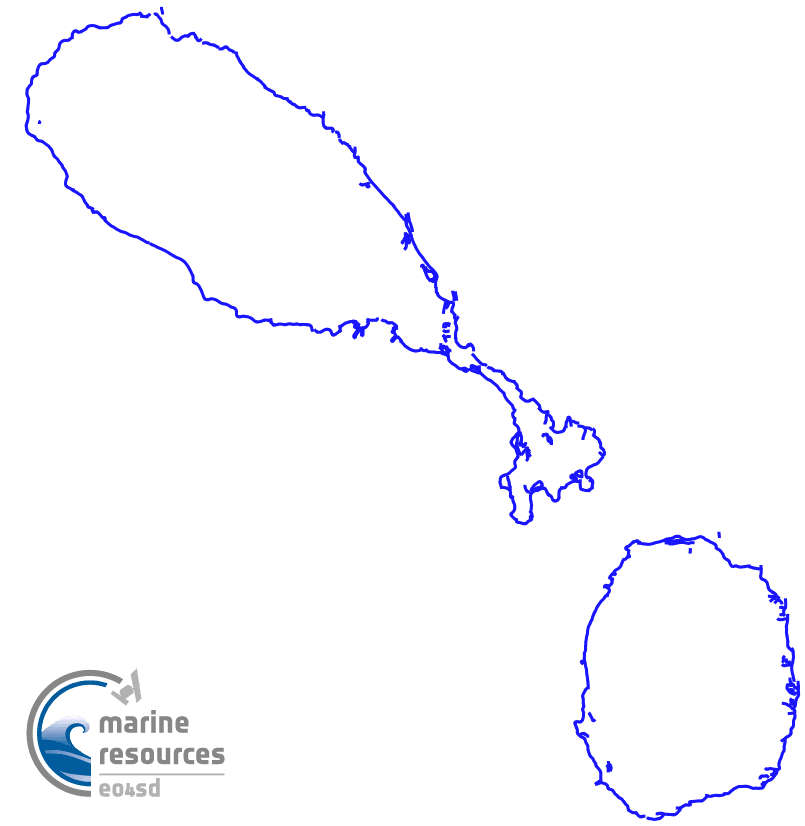

| Title | Quicklook | Description | Place | Time Period of Content | Download |
|---|---|---|---|---|---|
| Chlorophyll-a concentration in the Caribbean from satellite data (300m Sentinel 3a/3b OLCI) Service – Water Quality |
(466 KB) |
Phytoplankton are the microscopic photosynthetic organisms at the base of the marine food web.Chlorophyll-a is a photosynthetic pigment within the cells of phytoplankton, and its concentration in surface waters can be used as an indicator of phytoplankton biomass. Changes in phytoplankton populations may impact marine life and have implications for food availability and economic productivity. Satellite-derived chlorophyll concentration can be used to study seasonal and interannual phytoplankton dynamics, as well as monitoring coastal water quality, eutrophication and harmful algal blooms. High Chlorophyll-a concentrations can indicate high nutrient concentrations in the surface waters and can possibly be due to eutrophication of coastal waters. The chlorophyll-a concentration provided in the EO4SD portal is derived from Sentinel-3 OLCI instrument and processed using the POLYMER algorithm (doi:10.1364/OE.19.009783). The data are provided daily at 300 m resolution and has the unit mg Chl-a m-3. |
Caribbean | 2019102 - 20201011 | Example in GIS portal User Guide (PDF, 2.1 MB) Metadata (XML, 5.3 KB) |
| Total Suspended Matter (TSM) in the Caribbean from satellite data (300m Sentinel 3a/3b OLCI) Service – Water Quality |
(508 KB) |
Satellite-derived total suspended matter concentration (TSM) is a measure of the concentration of particles, both organic and inorganic, suspended in water and is closely related to water turbidity.Satellite-derived TSM can be used to assess and monitor suspended sediment distribution and is a key component of water quality in coastal areas. TSM may change over time and space due to currents, mixing, winds, waves, storms and tides. TSM concentration provided in the portal is derived from Sentinel 3 OLCI data using the algorithm and parameters from Nechad et al (2010) (doi:10.1016/j.rse.2009.11.022) and has units g m-3 |
Caribbean | 2019102 - 20201011 | Example in GIS portal User Guide (PDF, 2.1 MB) Metadata (XML, 5 KB) |
| St Vincent Historical Shorelines, Shoreline Change Rates (2016-2020) - SAR Version 1 |
(140 KB) |
Version 3 - Unvalidated, SAR-derived shorelines.This layer consists of data used to map shoreline change rates in St Vincent produced by the National Oceanopgrahy Centre for the Marine and Coastal Resources project under the Commonwealth Marine Economics and Earth Observation for Sustainable Development (EO4SD) initiative Geodatabase contains: Admin boundary - administrative boundary of coastline St Vincent Shorelines - Each shoreline delineated from the 5-year period Shoreline change rates - transects Historical shorelines between 2016-2020 can be visualised, created by annual median composites of Sentinel 1 imagery which delineates the approximate mean high water mark. Methods are inspired by Coastsat, a Google Earth Engine-enabled open-source software toolkit that delineates shorelines at any sandy coastline worldwide from over 30 years of publicly available satellite imagery (https://github.com/kvos/CoastSat). |
St Vincent | 2016 - 2020 |
Shapefile (ZIP, 308.6 KB) GDB file (ZIP, 262 KB) Metadata (XML, 7.7 KB) |
| Saint Kitts and Nevis 2019 Shoreline |  (23 KB) |
Shoreline shapefile was created by temporarily stacking 29 Sentinel-1 SAR images from 2019 then applying statistical edge detection using enhanced Region of Averages method. | St. Kitts | 20190101 - 20191230 |
Shapefile (ZIP, 93.4 KB) Metadata (XML, 3.2 KB) |
| Dominica 2019 Shoreline | (19 KB) |
Shoreline shapefile was created by temporarily stacking 29 Sentinel-1 SAR images from 2019 then applying statistical edge detection using enhanced Region of Averages method. | Dominica | 20190101 - 20191230 | Shapefile
(ZIP, 90.3 KB) Metadata (XML, 3.2 KB) |
| Saint Lucia 2019 Shoreline | (21 KB) |
Shoreline shapefile was created by temporarily stacking 29 Sentinel-1 SAR images from 2019 then applying statistical edge detection using enhanced Region of Averages method. | St. Lucia | 20190101 - 20191230 | Shapefile
(ZIP, 100.6 KB) Metadata (XML, 3.2 KB) |
| Saint Vincent 2019 Shoreline |  (17 KB) |
Shoreline shapefile was created by temporarily stacking 29 Sentinel-1 SAR images from 2019 then applying statistical edge detection using enhanced Region of Averages method. | St. Vincent | 20190101 - 20191230 | Shapefile
(ZIP, 52.3 KB) Metadata (XML, 3.2 KB) |
| Grenada 2019 Shoreline | (26 KB) |
Shoreline shapefile was created by temporarily stacking 29 Sentinel-1 SAR images from 2019 then applying statistical edge detection using enhanced Region of Averages method. | Grenada | 20190101 - 20191230 | Shapefile
(ZIP, 90.1 KB) Metadata (XML, 3.2KB) |
| Barbuda (Caribbean), bathymetry 2019 | (87 KB) |
Bathymetry mapping using Sentinel-2 images from 2019 and 2020. No in situ data for validation of the product. Stripe of clouds in the image. | Barbuda | 20190422 | TIFF raster file
(ZIP, 9.6 MB) Metadata (XML, 3.2KB) |
| Guadeloupe (Caribbean), bathymetry 2019 | (258 KB) |
Bathymetry mapping using Sentinel-2 images from 2019 and 2020. No in situ data for validation of the product. High cloudcover. | Guadeloupe | 20190820 | TIFF raster file
(ZIP, 95.3 MB) Metadata (XML, 3.2KB) |